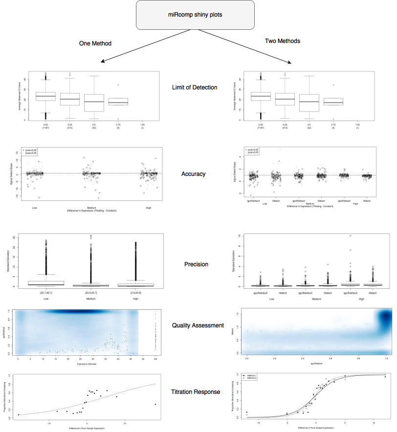

miRcomp Shiny Web Application
miRcomp-Shiny Screen Recording
Project Background
MicroRNAs (a class of small regulatory RNAs) are known to alter their expression levels in disease, malignancy, and cell stress [reference]. In this project, we aim to focus attention on microRNA gene expression. The miRcomp software package, benchmark dataset, and web application are crucial tools for the assessment and comparison of competing algorithms. All of these are working together to facilitate the development of new methodology for microRNA expression estimation, and to give researchers a space to assess their own methods.
miRcomp Package Introduction
The software package miRcomp developed by @mmcall uses data from a dilution / mixture experiment to assess methods that estimate microRNA expression from qPCR amplification curves. Specifically, the package provides assessments of accuracy, precision, data quality, titration response, limit of detection, and complete features. Each of these is described in more detail in miRcomp package vignette
Web Application Purpose
The addition of a web application to the existing software is essential. It helps to increase integration between expression estimation methods and subsequent statistical analyses. The web application makes all of this possible without knowing having any tools to run R installed, or having any knowledge about it. The miRcomp package is pre-installed, and miRcomp data is preloaded within the web application, so making comparisons is simple. The web application framework also makes comparisons possible that cannot easily be made using the miRcomp package alone.
Workflow and Screenshots
The above figure describes the workflow of the miRcomp-Shiny app with visualizations of the possible assessments and comparisons.

This screenshot shows some more options hosted on the application, with an emphasis on quality sliders that enable changing quality thresholds for either a single method against itself, or compared against a different method.

This menu within the miRcomp-Shiny app can be used to upload a novel method through the application, and assess it and compare to other methods hosted on the application
Authors and Contributors
MiRcomp R package created by @mmccall .